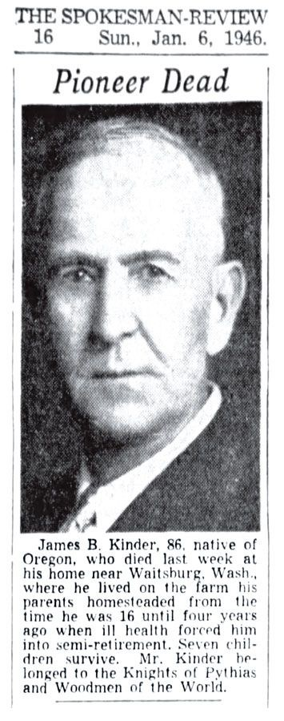

<meta charset="utf-8">
<meta name="viewport" content="width=device-width, initial-scale=1">
<meta name="robots" content="noindex">
<title>Dad's Side: the Kinders, Virginia to the Oregon Trail</title>
<link rel="stylesheet" href="style.css">

<nav>
  <a href="index.html">Home</a>
  <a href="tree.html">Family tree</a>
  <a class="here" href="kinder.html">Dad's side</a>
  <a href="deye.html">Mom's side</a>
</nav>

<main>
<h1>Dad's Side: the Kinders</h1>
<p class="sub">Alan's father's people. Three families of Oregon Trail pioneers who all crossed the plains in the 1850s and ended up together in the wheat country of eastern Washington. The oldest name goes back to the Virginia mountains.</p>

<h2>The Gold Rush kid who came back for a wife</h2>
<p>The man this story starts with is <strong>Franklin Peter Kinder</strong>. He was born on <strong>April 26, 1829, in the mountains of Wythe County, Virginia</strong> <span class="badge proven">Proven</span>. For a long time the story was that Franklin came to Oregon in 1847, a single young man on an early wagon train. It's a good line, and it's how his name got on the old Oregon pioneer lists. But the real records tell a better story, and it's worth getting right.</p>

<p>Here's what actually seems to have happened. Franklin left Virginia and went to the <strong>California Gold Rush</strong>, and the record puts him in California by 1850. Then he did what a lot of young miners did once they had some money: he went back east to find a wife. He married <strong>Rebecca Evans in Missouri in 1851</strong>, and the next year, <strong>1852</strong>, the two of them crossed the country together on the Oregon Trail <span class="badge probable">Probable</span>. Even the woman who keeps the old pioneer list flagged this: Franklin shows up on both the 1847 and the 1852 rolls, with a note that he was in California in 1850, went back east, married, and came again in 1852. So the neat "arrived 1847" line is <span class="badge lore">unproven</span> and probably wrong. What the record actually shows is the 1852 trip, with a new bride in the wagon.</p>

<figure>
  
  <figcaption>Franklin's name on the Oregon pioneer list. His entry shows up on both the 1847 and 1852 pages, with the note about the Gold Rush and the 1852 trip with his wife. It's why the "1847" story stuck around, and also why we can fix it.</figcaption>
</figure>

<h2>Free land in Oregon</h2>
<p>Franklin and Rebecca showed up at exactly the right time to get something that sounds made-up today: <strong>free land, from the U.S. government, just for settling on it and farming it</strong>. A law called the Oregon Donation Land Claim Act handed a married couple who moved to Oregon a big piece of ground, no charge. Franklin and Rebecca took theirs in <strong>Benton County, Oregon</strong>, in the hill country west of Corvallis <span class="badge proven">Proven</span>.</p>

<p>This isn't a story anybody made up. The actual deed still exists, a printed U.S. government document with <strong>Franklin's and Rebecca's names on it</strong>, granting them 320 acres <span class="badge proven">Proven</span>. It splits the land the old way: the south half to Franklin, the north half to Rebecca in her own name, which was unusual for a woman back then. And look whose name it's signed under, <strong>President James A. Garfield</strong>, dated April 19, 1881, just weeks before Garfield was shot and a few months before he died. It's the best single piece of paper on this whole side of the family, the one that turned a Virginia gold-miner into an Oregon landowner.</p>

<figure>
  
  <figcaption>The land deed, dated April 19, 1881: "give and grant unto the said Franklin P. Kinder... and unto his wife the said Rebecca Isabel Kinder... the tract of land above described," 320 acres in Oregon, signed in the name of President James A. Garfield. From the U.S. government's land-office records. <a href="documents/kinder-1881-oregon-land-patent.pdf">Full-size scan.</a></figcaption>
</figure>

<p>Their son, <strong>James Buchanan Kinder</strong>, was born on that Oregon land on <strong>October 31, 1859</strong>. As the name tells you, he was named after the president elected in 1856 <span class="badge proven">Proven</span>.</p>

<h2>Three pioneer families, one wagon road</h2>
<p>Here's something most families never notice about themselves. Alan's dad's side isn't one pioneer family, it's <strong>three</strong>, and they all rolled west in the same ten years.</p>

<p>Rebecca's family, the <strong>Evanses</strong>, were the second. Her father, <strong>Thomas H. Evans</strong>, was born in <strong>1808 in Kentucky</strong>, moved to Missouri, and then crossed the very same 1852 trail to Oregon, where he claimed <strong>his own free 320-acre land grant</strong> in the Waldo Hills near Sublimity <span class="badge proven">Proven</span>. So two of Alan's pioneer families, the Kinders and the Evanses, made that crossing in the same year and both took free government land. And 1852 was a hard year to make it: it was the deadliest season on the whole Oregon Trail, the year cholera swept the wagon trains and killed so many that one traveler said the road was "almost a solid graveyard." Alan's people came through it. We also know Thomas was Rebecca's father twice over: her death certificate names him, and his own 1868 will leaves a share to "Rebecca I. Kinder." He'd end up a founding officer of the Masonic lodge in Sublimity. Kentucky to Missouri to Oregon, one step at a time.</p>

<p>The third family came in through James Buchanan Kinder's wife, <strong>Ella Muncy</strong>, and they might be the most colorful of the bunch. Ella was born in <strong>1874 in Roseburg, Oregon</strong> <span class="badge proven">Proven</span>. Her father, <strong>Isaac Newton Muncy</strong>, was born in <strong>Hempstead County, Arkansas, in 1844</strong>, came to Oregon as a boy in 1852, and grew up to be a <strong>frontier preacher</strong>, riding the Douglas County circuit in the 1870s and working as an agent for a church newspaper. Then, late in life, he <strong>won a seat in the Oregon state legislature</strong>, sitting in the House in 1909 as the Republican representative for the south-coast district, out of Gold Beach <span class="badge proven">Proven</span>. A frontier preacher who ended up making laws is a pretty good thing to have on the family tree.</p>

<h2>The wheat country</h2>
<p>The Kinders didn't stay in western Oregon. When James was about sixteen, so around 1875, the family packed up and moved north and east, into the dry, rolling wheat country around <strong>Waitsburg, Washington</strong>, where they homesteaded a farm <span class="badge proven">Proven</span>. We know this from James's own obituary, which says he lived "on the farm his parents homesteaded from the time he was 16." Franklin died there in 1889, Rebecca in 1912, and James worked that wheat ranch until poor health slowed him near the end. Four generations of Kinders are buried together in the cemetery at Waitsburg.</p>

<figure>
  
  <figcaption>The one face we have of anyone this far back. James Buchanan Kinder, Alan's grandfather, in his obituary in the Spokane <em>Spokesman-Review</em>, January 6, 1946: "James B. Kinder, 86, native of Oregon... lived on the farm his parents homesteaded from the time he was 16 until four years ago when ill health forced him into semi-retirement. Seven children survive." He belonged to the Knights of Pythias and the Woodmen of the World.</figcaption>
</figure>

<p>It was a hard place and a hard time. Ella Muncy Kinder died young, on <strong>February 13, 1912</strong>, of cancer, after what the local paper called "an almost hopeless operation." Her son, <strong>Darrell Kinder</strong>, Alan's father, was only twelve when he lost his mom <span class="badge proven">Proven</span>. Darrell had been born on the Waitsburg ranch in 1899.</p>

<h2>Down to Alan</h2>
<p>Darrell grew up, left the wheat ranch, and moved west to the coal-and-timber country south of Seattle. In <strong>1923</strong> he married a Walla Walla schoolteacher named <strong>Vera Deye</strong> (her family is on the <a href="deye.html">other page</a>), and in <strong>1925</strong> their son <strong>Alan James Kinder</strong> was born <span class="badge proven">Proven</span>.</p>

<p>And here's a quiet bit of timing worth sitting with. Alan came home from World War II and got out of the Army in early December 1945. His grandfather and namesake, <strong>James Buchanan Kinder, the boy who was born on the Oregon land claim back in 1859, died at Waitsburg on December 30, 1945</strong>, just a few weeks after Alan got home <span class="badge proven">Proven</span>. The old pioneer's grandson made it back from the war just in time, and then the last man who'd been born on that Oregon land was gone. From a covered wagon to the front line in Europe, in three generations.</p>

<h2>How far back it really goes</h2>
<p>Here's the honest wall. The solid, record-backed Kinder line stops with <strong>Franklin himself, born in 1829 in Wythe County, Virginia</strong>. The online family trees all say Franklin's father was a <strong>Christian Kinder, born around 1804</strong>, but I went looking and couldn't find one single record, no census, no will, no marriage, that actually proves it. So that name is just a guess copied from tree to tree <span class="badge lore">Unproven</span>, not something to hang your hat on.</p>
<p>Those same trees run the family back further, to German immigrants named Kinder who came to Pennsylvania and Virginia in the 1700s. Those immigrants were real people, that part checks out, but two things are also true: nobody has a record connecting Alan's Franklin to them, and the popular online version is garbled (it mixes up two different men named Peter Kinder, one of whom actually drowned in a Virginia flood in 1749). So the whole "German roots in the 1700s" story is a <span class="badge lore">lead to chase</span>, not a fact. The only way to ever settle it is the old handwritten deed and will books in Wythe County, Virginia, not somebody's Ancestry tree.</p>

<p>The two grandmother lines: the <strong>Evans</strong> family is proven back to <strong>Thomas Evans, born 1808 in Kentucky</strong> (his parents are just an online guess, and Evans is a common name, so it's left off here on purpose). The <strong>Muncy</strong> family is proven back to <strong>Isaac Newton Muncy, born 1844 in Arkansas</strong> (a popular claim ties this family to colonial Virginia in the 1600s, but there's no record for it, so it's not put here as fact).</p>

<h2>The records</h2>
<ul class="docs">
  <li><a href="documents/kinder-1881-oregon-land-patent.pdf">Franklin &amp; Rebecca Kinder's 1881 Oregon land deed</a><span class="doc-what">The government document shown above. 320 acres, signed in President Garfield's name. The centerpiece of this whole side. Full-size scan.</span></li>
  <li><a href="http://www.oregonpioneers.com/1852_JQ.htm">Oregon pioneer list, 1852: the Franklin Kinder entry</a><span class="doc-what">Names Franklin, his wife Rebecca Evans, the Gold Rush detour, and the 1852 trip. The record that both started and corrects the "1847" story.</span></li>
  <li><a href="https://www.findagrave.com/memorial/38032041/franklin-peter-kinder">Franklin Peter Kinder, 1829-1889</a><span class="doc-what">Born in Wythe County, Virginia; buried at Waitsburg, Washington. Grave photo.</span></li>
  <li><a href="https://www.findagrave.com/memorial/7672548/rebecca_isabell-kinder">Rebecca Isabell (Evans) Kinder, 1835-1912</a><span class="doc-what">Her death certificate is on the page, and it names her father, proving the Evans link.</span></li>
  <li><a href="documents/james-buchanan-kinder-1946.jpg">James Buchanan Kinder's obituary and portrait, 1946</a><span class="doc-what">"Pioneer Dead," the Spokane Spokesman-Review, January 6, 1946. The only known photograph of any ancestor on this whole tree, and his obituary. Alan's grandfather and namesake, born on the Oregon land, died 25 days after Alan came home from the war.</span></li>
  <li><a href="https://www.findagrave.com/memorial/38032042/james-buchanan-kinder">James Buchanan Kinder, 1859-1945 (Find a Grave)</a><span class="doc-what">Grave, dates, and family links at the Waitsburg cemetery.</span></li>
  <li><a href="https://www.findagrave.com/memorial/7547028/ella-kinder">Ella (Muncy) Kinder, 1874-1912</a><span class="doc-what">Born in Oregon; died when her son Darrell was twelve. Has a newspaper obituary.</span></li>
  <li><a href="https://www.findagrave.com/memorial/161137028/isaac_newton-muncy">Isaac Newton Muncy, born 1844</a><span class="doc-what">Ella's father: frontier preacher and Oregon state legislator.</span></li>
  <li><a href="https://records.sos.state.or.us/ORSOSWebDrawer/Record/6785284/File/document">Oregon Legislators Guide: I. N. Muncy, 1909 House</a><span class="doc-what">The official state record: Isaac Muncy, Republican, House of Representatives, District 6, residence Gold Beach, 25th regular session, 1909.</span></li>
  <li><a href="https://digitalcommons.pepperdine.edu/heritage_center/5/">"Christians on the Oregon Trail" (Rushford)</a><span class="doc-what">The history of the frontier Christian Church that names Isaac Muncy, his mentor A. L. Todd, and his preaching in Douglas County. Free PDF.</span></li>
  <li><a href="https://www.findagrave.com/memorial/28903873/thomas_h-evans">Thomas H. Evans, 1808-1869</a><span class="doc-what">Rebecca's father: Kentucky to Missouri to Oregon.</span></li>
  <li><a href="https://www.findagrave.com/memorial/169861029/darrell_w-kinder">Darrell W. Kinder, 1899-1977</a><span class="doc-what">Alan's father. Born on the Waitsburg ranch.</span></li>
</ul>

<div class="footer"><p><a href="index.html">Back to the family</a> &middot; <a href="tree.html">See the tree</a> &middot; <a href="deye.html">On to Mom's side</a></p></div>
</main>
